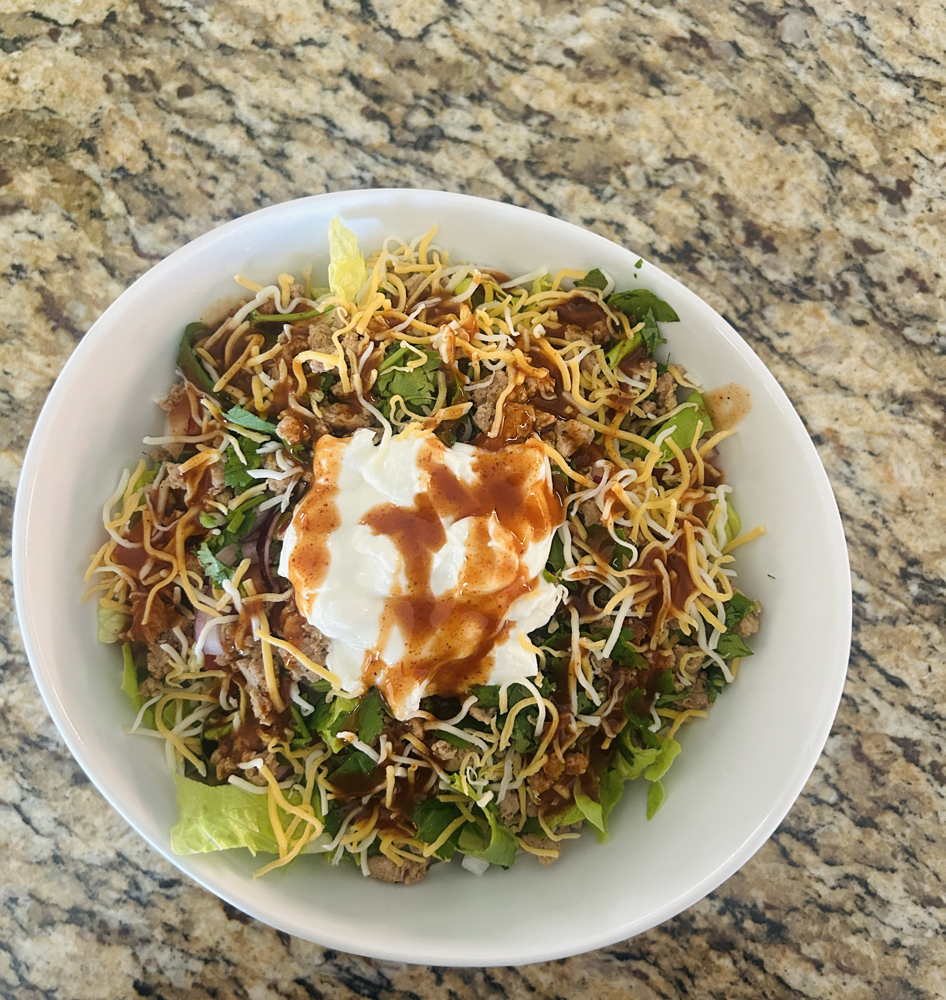
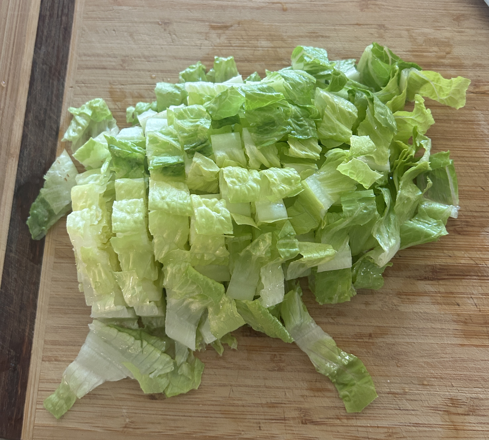

This taco salad is light, filling, and full of flavor. It’s made with lean ground turkey or chicken, crisp romaine, fresh tomatoes, red onion, and chopped cilantro. A little shredded cheese on top adds a savory touch, and it’s all tied together with a creamy Greek yogurt dressing. It’s quick to make, high in protein, and perfect for an easy lunch or dinner that doesn’t feel like a compromise.
Nutrition Facts
- ~380 calories
- ~40g protein
- ~16g fat
- ~12g Net Carbs
Ingredients:
- 1 head of Romaine Lettuce
- 1/4 cup plain non-fat Greek Yogurt
- 2 tbsp Mexican-blend Shredded Cheese
- 1 cup seasoned ground turkey/chicken/beef
- Drizzle of Hot Sauce
- 1 Roma Tomato
- 3 tbsp diced red onion
- 2 tbsp shredded cilantro
How to Make:
- Wash and chop Romaine lettuce with 1/2 inch cuts

- Dice your tomato, onion, and cilantro
- Add your protein and veggies on top of the chopped cilantro
- Sprinkle with cheese
- Top with greek yogurt and a drizzle of hot sauce and done!